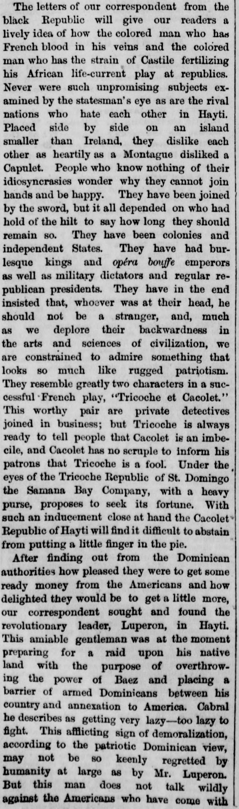

They resemble greatly two characters in a successful French plavSe parecen mucho a dos personajes de una exitosa obra de teatro francesa
According to the April 22, 1873 New York Herald, the Samana Bay Company sought its fortune in the Dominican Republic, while the newspaper's correspondent interviewed the revolutionary leader Luperon in Hayti. Luperon was preparing a raid on his native land to overthrow Baez, establish an armed barrier against American annexation, and described Cabral as too lazy to fight.Según The New York Herald del 22 de abril de 1873, la Samaná Bay Company buscaba enriquecerse en la República Dominicana, al tiempo que el corresponsal del rotativo entrevistó en Haití al caudillo revolucionario Luperón. Este preparaba una incursión en su tierra natal para derrocar a Báez y levantar una muralla armada contra la anexión estadounidense, tildando despectivamente a Cabral de carente de bríos para el combate.
FULL TEXT:TRADUCCIÓN:
...man who has the strain of Castile fertilizing his African life-current play at republics. Never were such unpromising subjects examined by the statesman's eye as are the rival nations who hate each other in Hayti. Placed side by side on an island smaller than Ireland, they dislike each other as heartily as a Montague disliked a Capulet. People who know nothing of their idiosyncrasies wonder why they cannot join hands and be happy. They have been joined by the sword, but it all depended on who had hold of the hilt to say how long they should remain so. They have been colonies and independent States. They have had burlesque kings and opera bouffe emperors, as well as military dictators and regular republican presidents. They have in the end insisted that, whoever was at their head, he should not be a stranger, and, much as we deplore their backwardness in the arts and sciences of civilization, we are constrained to admire something that looks so much like rugged patriotism....hombre que tiene la cepa de Castilla fertilizando su corriente de vida africana juegue a las repúblicas. Nunca fueron examinados por el ojo del estadista sujetos tan poco prometedores como son las naciones rivales que se odian entre sí en Haití. Colocadas lado a lado en una isla más pequeña que Irlanda, se detestan tan cordialmente como un Montague detestaba a un Capulet. Las personas que no conocen nada de sus idiosincrasias se preguntan por qué no pueden unir las manos y ser felices. Han sido unidas por la espada, pero todo dependía de quién tuviera la empuñadura para decir cuánto tiempo permanecerían así. Han sido colonias y Estados independientes. Han tenido reyes de burlesca y emperadores de ópera bufa, así como dictadores militares y presidentes republicanos regulares. Al final han insistido en que, quienquiera que estuviera a su cabeza, no fuera un extraño, y, por mucho que deplore su atraso en las artes y ciencias de la civilización, estamos obligados a admirar algo que se parece tanto a un rudo patriotismo.
They resemble greatly two characters in a successful French play, "Tricoche et Cacolet." This worthy pair are private detectives joined in business; but Tricoche is always ready to tell people that Cacolet is an imbecile, and Cacolet has no scruple to inform his patrons that Tricoche is a fool. Under the eyes of the Tricoche Republic of St. Domingo the Samana Bay Company, with a heavy purse, proposes to seek its fortune. With such an inducement close at hand the Cacolet Republic of Hayti will find it difficult to abstain from putting a little finger in the pie.Se parecen mucho a dos personajes de una exitosa obra francesa, «Tricoche et Cacolet». Esta digna pareja son detectives privados unidos en el negocio; pero Tricoche siempre está listo para decirle a la gente que Cacolet es un imbécil, y Cacolet no tiene escrúpulo en informar a sus clientes que Tricoche es un tonto. Bajo los ojos de la República Tricoche de Santo Domingo, la Compañía de la Bahía de Samaná, con una bolsa pesada, se propone buscar su fortuna. Con tal incentivo tan a la mano, la República Cacolet de Haití encontrará difícil abstenerse de meter un dedito en el pastel.
After finding out from the Dominican authorities how pleased they were to get some ready money from the Americans and how delighted they would be to get a little more, our correspondent sought and found the revolutionary leader, Luperon, in Hayti. This amiable gentleman was at the moment preparing for a raid upon his native land, with the purpose of overthrowingDespués de averiguar de las autoridades dominicanas cuán complacidas estaban de obtener algún dinero contante de los estadounidenses y cuán encantadas estarían de obtener un poco más, nuestro corresponsal buscó y encontró al jefe revolucionario, Luperón, en Haití. Este amable caballero estaba en el momento preparándose para una incursión sobre su tierra nativa, con el propósito de derrocar
[Editor's note: the paper writes of the east as part of Hayti. From 1822 to 1844 the Dominican Republic was held by Haitian military occupation, against its people's will; it restored its independence on February 27, 1844.][Nota del editor: el periódico habla del este como parte de Haití. De 1822 a 1844 la República Dominicana estuvo bajo ocupación militar haitiana, contra la voluntad de su pueblo; restauró su independencia el 27 de febrero de 1844.]
The New York Herald. New York [N.Y.], April 22, 1873. Page 8.